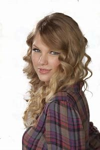
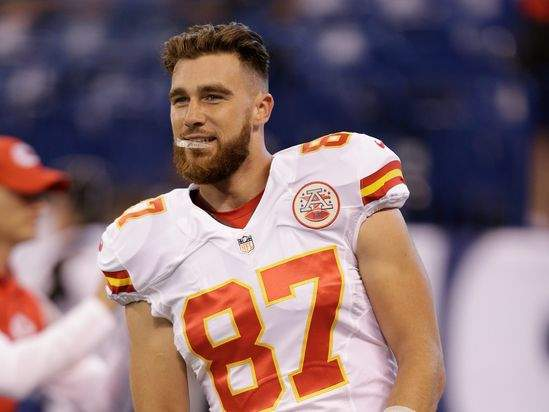

Taylor and Harry
Taylor Swift is the best
Taylor and Travis se van a casar

TODO EMPIEZA EN 2016
Kelce juega a Besar, Casar, Matar" en una entrevista, con las opciones de Ariana Grande, Katy Perry y Taylor Swift. "Maldita sea, eso es un desastre. No quiero matar a ninguna de ellas", dijo. Luego respondió: "Ariana muere, desafortunadamente. Te quiero, pero te has ido. Y luego Taylor Swift sería el beso, y luego Katy Perry sería la... ¿Cuál es la última? Katy Perry sería la casada". La entrevista resurgió en 2023 cuando los rumores de citas con Swift comenzaron a ganar fuerza."
JULIO 2023
Kelce habla sobre el tiro que disparó y falló mientras asistía al espectáculo Eras Tour de Swift en Kansas City, Missouri, en su podcast New Heights con su hermano Jason, jugador de la NFL de los Philadelphia Eagles. Los comentarios de Kelce son captados por los medios de comunicación.
"Me decepcionó que no hable antes o después de sus shows porque tiene que guardar su voz para las 44 canciones que canta. Así que me dolió un poco no poder entregarle uno de los brazaletes que hice para ella", dijo Kelce. "Si estás al tanto de los conciertos de Taylor Swift, hay un brazalete de la amistad y recibí un montón de ellos estando allí, pero quería darle a Taylor Swift uno con mi número. Muy bien".
Jason le preguntó si su hermano se refería a su número de camiseta o a su número de teléfono.
—Ya sabes cuál —contestó Kelce—. "Ella no estaba conociendo a nadie y al menos no quería conocerme, así que yo, mmm, lo tomé como algo personal. Pero fue un espectáculo increíble y solo he visto a Arrowhead lleno así para los juegos de los Chiefs con tanta emoción, y sí, todos estaban vestidos de rosa y morado volviéndose locos. Fue un espectáculo salvaje".
24 DE SEPTIEMBRE
Swift acepta la invitación de Kelce y asiste a su partido en Kansas City. Ella es fotografiada en las gradas con su madre. Las fuentes revelan más tarde que era la primera vez que se reunía con su familia, y que todo salió bien.

OCTUBRE 2023>
Octubre 1>
Como se rumoreaba, Swift asiste al partido del domingo por la noche de Kelce contra los New York Jets en el MetLife Stadium. Trae un grupo de amigos famosos, incluidos Blake Lively, Ryan Reynolds, Sophie Turner, Hugh Jackman y Sabrina Carpenter.

Swift y Kelce no son fotografiados ni filmados juntos durante el juego, lo que realmente mantiene las cosas más privadas. Abandonaron el estadio por separado después del partido.
12 DE OCTUBRE
Swift es fotografiada con Donna Kelce en el partido de Kelce contra los Broncos el jueves. Esta vez, combina un vestido negro con una chaqueta de los Chiefs.

13 DE OCTUBRE
Después del partido, parece que Swift pasó la noche en la casa de Kelce en Kansas City. Las imágenes compartidas por el Daily Mail muestran su vehículo de seguridad estacionado afuera de su casa el viernes por la mañana. Era la camioneta blanca que se vio recogiéndola en el aeropuerto.
Ese mismo día, una fuente que habló con US Weekly dijo que las cosas han ido bien y que el amigo de la nueva pareja cree que son una gran pareja. "Todavía es muy reciente, pero realmente se gustan", dijo la fuente. "Ambos quieren tratar de verse cuando puedan y ambos son comprensivos con los horarios del otro".
La fuente dijo que ambos han estado ocupados con sus "propias cosas", pero eso tiene a sus amigos convencidos de que es una "buena pareja".
"Se apoyan mutuamente y no tienen que estar uno al lado del otro todo el tiempo y eso se siente cómodo", explicó la fuente. "Planean crear momentos para pasar juntos y conocerse mejor". Se supone que Swift estará en más juegos, pero no quiere ser una gran distracción.
"Taylor no quiere ser una distracción para Travis", explicó la fuente. "Ella sabe que no es fácil cuando se presenta a sus juegos. Es un espectáculo. Quiere apoyarlo y lograr un equilibrio y, al mismo tiempo, no distraer al equipo".
14 DE OCTUBRE
Swift y Kelce pasan su fin de semana en la ciudad de Nueva York. La pareja hace apariciones sorpresa en SNL, luego asisten a la fiesta posterior al programa y se quedan hasta las 4 a.m.


"Taylor y Travis estuvieron allí toda la noche, y estaban tan sonrientes, estaban tan felices", comenzó la fuente. "Eran muy habladores. Fueron muy divertidos. Hablaron con todas y cada una de las personas en la sala que hablaron con ellos".
Swift y Kelce se relacionaron por separado, pero Kelce vigiló a Swift. "[Él] se acercaba y la tocaba, ponía su mano en la parte baja de su espalda o ponía sus manos en su cintura y luego se daban un pequeño beso y luego volvían a hablar con quien estaban hablando", dijo la fuente. "Siguió comunicándose con ella, pero le dio espacio para hablar con otras personas en la habitación, tanto hombres como mujeres, y también habló con un montón de personas en la habitación".
"Siempre estuvieron cerca durante toda la noche", agregó la fuente. "Estaban súper cómodos el uno con el otro. Eran muy tiernos; No eran incómodos. Ella se sentía muy cómoda con él, y él era un caballero total".
16 DE OCTUBRE
Una testigo, Annie Williamson, habla con The Messenger sobre cómo eran Swift y Kelce en Waverly Inn el domingo por la noche.
"Estaban en una cabina redonda sentados muy cerca el uno del otro en una conversación profunda todo el tiempo", dijo Williamson. "Se veía súper romántico y era súper íntimo". Estuvieron "definitivamente tomados de la mano" y riendo durante toda la cena, reveló.
"Realmente disfrutaban de la compañía del otro", dijo. "No puedo enfatizar lo suficiente lo cerca que estaban sentados, tan cerca y acurrucados".
Ese mismo día, una fuente de Entertainment Tonight desmintió un rumor de que Jenna Bush Hager comenzó en TODAY con Hoda & Jenna. Bush Hager afirmó que una amiga le dijo que Swift y Kelce estaban buscando casa juntos en Kansas City. Ella enfatizó después que era solo un rumor y "no confirmado por NBC News". "Taylor no se parece a nadie con quien Travis haya salido antes", dijo la fuente. "Fue muy inesperado para sus amigos, pero él está muy enamorado de ella y muy, muy feliz".
"Algunas personas pensaron que solo estaba bromeando sobre el brazalete y que estaba enamorado de ella a principios de este verano, pero lo dijo en serio", continuó la fuente, haciendo referencia a los comentarios de Kelce sobre tratar de darle a Swift un brazalete de la amistad con su número de teléfono. "[Están] pasando un buen rato conociéndose, [y] han presentado a algunos de sus amigos".
Sus amigos también los aprueban, dijo la fuente: "Todo el mundo se lleva bien y ve lo bien que se divierten. Hace una pareja muy mona.
18 DE OCTUBRE
"Travis es diferente a cualquiera con quien Taylor haya salido antes, y ella se está enamorando de él cada vez más a medida que pasan los días", dijo la fuente de Us. "[Él] hace todo lo posible para hacer que Taylor se sienta especial de cualquier manera que pueda". Un ejemplo fue a través de las flores, reveló la fuente: "Taylor no podía creer el enorme ramo de flores que Travis le envió solo porque sí".
"Él la hace sentir segura y protegida, y al mismo tiempo, apoya su independencia y éxito", dijo la fuente. "Las cosas van muy bien [para ellos]".
Kelce también habla en su podcast New Heights sobre sentirse protector de Swift. Negó haber empujado a su guardia de seguridad fuera del camino cuando iban a la fiesta posterior a SNL.
"Siento que cada vez que estoy en una cita, siempre tengo la sensación de que soy un hombre en la situación", dijo en un momento. "Soy, como, protectora, sí, seguro. Siempre tienes ese sentimiento o esa autoconciencia, supongo".
En cuanto a su aparición en SNL, Kelce dio la historia del origen: "Nos presentamos en SNL con la idea de ir a apoyar a Ice Spice, ella y Taylor son buenas amigas", relató. Siempre quise conocer a [el presentador] Pete Davidson, he sido un fan suyo durante bastante tiempo, desde que estaba en el show, SNL".
Más tarde ese día, TMZ informa que Kelce compró una mansión de 6 millones de dólares en Kansas City, en parte para tener más privacidad mientras continúa su relación con Swift. Las fuentes de TMZ enfatizan que fue solo la compra de Kelce, y Swift no es copropietaria ni ayudó a pagarla.
19 DE OCTUBRE
La fuente dijo: "Travis y Taylor están muy involucrados. Los dos están muy enamorados el uno del otro y están disfrutando de su tiempo juntos, pero también están planeando para el futuro. Taylor comienza su gira internacional en noviembre, y Travis planea estar allí para pasar tiempo con ella. Travis y Taylor se toman muy en serio sus carreras, y los dos se unen por eso y quieren mostrarse apoyo mutuamente siempre que puedan".
20 DE OCTUBRE
El viernes 20 de octubre, Kelce compartió algunos consejos con los periodistas durante una conferencia de prensa sobre cómo los fans podrían vestirse con el disfraz de una pareja convincente de él y Swift, también conocida como "Tayvis".
"Te diré una cosa, hombre, ese bigote y la camiseta 87 fueron bastante icónicos allí por un tiempo y lo tuve cuando conocí a Taylor por primera vez, así que supongo que mi bigote", dijo, y agregó que también podrían ponerse un brazalete de la amistad, haciendo referencia al que trató de entregarle a Swift durante su concierto de julio en Arrowhead Stadium.